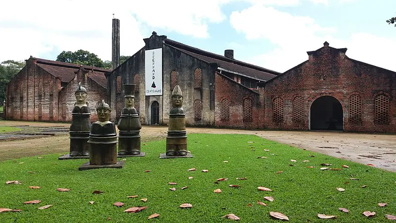

Oficina Cerâmica Francisco Brennand
Ao lado do Instituto Ricardo Brennand, fica outro espaço importante entre os principais pontos turísticos de Recife, é a Oficina Cerâmica Francisco Brennand. Percebeu a semelhanças nos nomes? Ambos são irmãos e são considerados praticamente patronos da cultura no estado, tamanha a contribuição que fizeram por ela (infelizmente, faleceram em 2020 e 2019, respectivamente). Francisco Brennand se tornou, através de seu trabalho, uma referência no trabalho em cerâmica em todo o Brasil. Um detalhe importante é que você pode planejar visita às duas atrações em um único dia, tanto o Instituto Ricardo Brennand, como a Oficina Cerâmica Francisco Brennand. Nessa última, é possível observar peças de cerâmica e escultura produzidas por Francisco ao longo de sua vida. É perceptível ainda influências europeias nas obras. O Parque de Esculturas do artista funciona em outro local A originalidade das peças que você pode conferir na oficina cativa os turistas e a curiosidade dos visitantes. No espaço você verá: Os Comediantes; o Salão das Esculturas, o Anfiteatro, Templo Central, a Praça Burle Marx, a Accademia, Cine Teatro Deborah Brennand, Templo do Sacrifício, uma cafeteria entre outras obras da exposição permanente.
- Endereço: Propriedade Santos Cosme e Damião, s/n, Várzea, Recife.
- Horários: Segunda a quinta-feira, das 8 às 17 horas; sexta, das 8 às 16 horas;
- Sábados e domingos, das 10 às 16 horas;
- Nos feriados, é preciso consultar os horários por telefone.